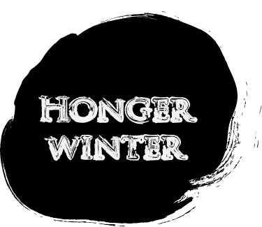

Mijn voeten en handen heb ik ingezwachteld tegen de kou. Kranten tegen m’n borst. Ik duw een handkar voort waarin mijn zoon vredig ligt te slapen. Centraal Station. De tramrails liggen er kaal bij. Het hout tussen de rails is al lang weggenomen. Ik word geacht het IJ over te steken om in de dorpen boven Amsterdam mijn gouden trouwring te ruilen tegen groenten en aardappelen. Maar in plaats daarvan ben ik op zoek naar Stijloefeningen van Raymond Queneau. Dat boek bestaat nog niet in de winter van 1945 (en al helemaal nog niet in de bewerking van Rudy Kousbroek), maar ik verga van de honger en ik kan niet meer normaal denken. De wind snijdt door de kranten heen.Op de nog niet bestaande trappen van wat later de bibliotheek zou worden houdt een vrouw mij staande. Haar zwarte haar piekt als verbrand helmgras op haar hoofd. Ze heeft ingevallen wangen, alsof ze continu heel hard op een sigaret zuigt. Ze gaat gekleed in lompen en vraagt me of dit het postkantoor is. Ze praat Engels, met een Frans accent. Zou ze joods zijn? Zou ze van het verzet zijn? Misschien wil ze het postkantoor overvallen. Weet ze wel wat voor gevaar ze loopt? De mof voelt dat hij aan de verliezende hand is en een kat in het nauw maakt rare sprongen.
Ik wil haar graag helpen, maar ik durf niet. Ze kijkt achter zich. Een man fietst weg op een fiets zonder banden. Ze rent er achteraan.In de denkbeeldige bibliotheek is het pikkedonker. Met een knijpkat schep ik licht. De bibliotheek staat grotendeels onder water. In mijn lichtbundel drijven boeken. Kasten liggen omver. Een duif vliegt op. Ik schrik en laat de knijpkat vallen.Mijn ogen wennen langzaam aan de duisternis. Bij de Q vind ik een aantal boeken van Queneau. Maar Stijloefeningen zit er niet bij. Ik kijk in de systeemkaartenbak. Stijloefeningen is wel degelijk aanwezig, zegt een kaartje. Ik waad door het water terug naar de Q. ‘Blijf staan!’ zegt een stem. Ik draai me om en zie een man met een vlassig baardje een jachtgeweer op mij richten. ‘Wat moet je,’ zegt hij. ‘Ik ben op zoek naar Stijloefeningen van Raymond Queneau,’ antwoord ik. De man laat zijn jachtgeweer zakken en begint mee te zoeken. Maar ook hij kan het boek niet vinden. Hij raadt me aan het magazijn te proberen. Daar moet nog een exemplaar liggen. Het magazijn bevindt zich in de kelders, die staan helemaal onder water. Ik staak mijn zoektocht. Uren later, even buiten de stad, op een mestvaalt waar tot voor kort de 18e eeuwse boerenhofstede Bosch en Lommer gelegen was, vind ik een paar babyschoentjes in redelijke staat.
Deel of reageer
Reacties
Tijs van der Werff, 29 januari
Een goed verhaal, de vormgeving van het verhaal versterkt de sfeer goed!
Verhaal Delen